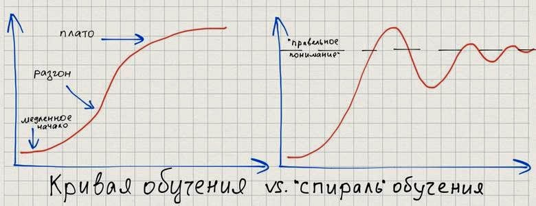

Несовпадение фаз спиралей обучения¶
Автор раздела: Ivan Zakrevsky
Содержание
📝 Вторая причина столь разных точек зрения на использования инструментов заключается в "спирали обучения". Если у вас больше 5 лет опыта, то вы наверняка замечали, что кривая обучения на самом деле выглядит не совсем так, как обычно принято представлять, а несколько иначе. Я бы сказал, что кривая обучения – это скорее бесконечный процесс, который в лучшем случае будет "сходиться" к точке "идеального использования инструмента":
Рис. 1: Кривая обучения vs. Спираль обучения. Изображение из статьи "Is TDD Dead. Часть 5" / Сергей Тепляков¶
Форма этой "спирали обучения" обусловлена нашей увлеченностью. Как только мы узнаем о новом инструменте мы начинаем его интенсивно использовать, нас "заносит" и мы начинаем его применять там, где нужно, и там, где без него было бы лучше обойтись. Со временем наша эйфория проходит и мы можем либо вообще отказаться от него ("Все, паттерны проектирования не нужны!") или же перейти на новый уровень понимания и использовать инструмент более рационально.
Разные люди находятся на разных точках "спирали обучения", что также усложняет взаимопонимание. К тому же, у разных людей точка "правильного" понимания (линия "правильного понимания" на графике справа) находится на разном уровне, что проявляется в том, что кто-то полностью отказывается от инструмента ("TDD не нужен!", или "IoC не нужен!", "или ОО не нужно" и т.п.), а кто-то продолжает упорно использовать инструмент не по назначению.
—"Is TDD Dead. Часть 5" / Сергей Тепляков
Такое простое объяснение профессиональных конфликтов. У одного специалиста - девиация в сторону паттернов, у другого - в сторону алгоритмов. И уже не могут на Code Review поделить, что же из них важнее.
Кстати, это так же объясняет то, почему соискатель и интервьюер часто не находят друг друга.
Психолог, нобелевский лауреат Даниэль Канеман выделил "правило пик-конец" нашей памяти. Мы помним прошлое неравномерно. Наибольший вес мы придаем двум видам событий: тем, что вызвали максимальные эмоции и тем, которые произошли недавно.
Но, как было сказано:
📝 кривая обучения – это скорее бесконечный процесс, который в лучшем случае будет "сходиться" к точке "идеального использования инструмента".
—"Is TDD Dead. Часть 5" / Сергей Тепляков
Иными словами, чем шире полнота знаний, тем меньше степень "увлеченности" отдельными аспектами этих знаний, и лучше сбалансированность решений. Т.е., лечится это, опять же, увеличением охвата знаний.
Кстати, именно это явление описывал M.Fowler в своей статье "Is Design Dead?":
📝 "The essence of this argument is that patterns are often over-used. The world is full of the legendary programmer, fresh off his first reading of GOF who includes sixteen patterns in 32 lines of code. I remember one evening, fueled by a very nice single malt, running through with Kent a paper to be called "Not Design Patterns: 23 cheap tricks" We were thinking of such things as use an if statement rather than a strategy. The joke had a point, patterns are often overused, but that doesn't make them a bad idea. The question is how you use them."
—"Is Design Dead?" by M.Fowler
См. также:
Code Review¶
Поговорим о проявлении этой проблемы на Code Review.
Конфликтность снижается по мере роста уровня знаний в коллективе, поэтому обучение должно быть ключевым приоритетом, а знания должны быть возведены в элемент престижа.
Во-первых, каждая последующая книга имеет меньший, чем предыдущая, относительный прирост знаний по отношению к уже освоенным знаниям, что снижает меру "заноса" под впечатлением нового инкремента знаний, а это снижает противостояние на почве несовпадения фаз спиралей обучения.
Во-вторых, по мере роста знаний, разработчик начинает ассоциировать свои решения с их первоисточниками, а не со своей собственной гениальностью, и уже не воспринимает критику решений как угрозу имиджу собственного интеллекта. Этим мнение отличается от знания. Никому не придет в голову обижаться, например, на отвергание третьего закона Ньютона.
В-третьих, он начинает лучше понимать контекст применимости каждого решения, и начинает меньше верить в "серебрянную пулю".
Да и без обучения (Collaborative Development) невозможно впринципе достигнуть "Collective Code Ownership" (это четко следует из карты зависимостей Agile-практик, см. "Extreme Programming Explained" 1st edition by Kent Beck, "Figure 4. The practices support each other"), зато можно легко достигнуть "Эффекта разбитых окон".
Понимание - единственный способ достигнуть требуемую реализацию. Нет большого смысла пытаться управлять качеством кода - это уже слишком поздно. Post-Review - это как хождение наощуп.
Управлять нужно пониманием, умело выявляя принципы проектирования, соответствующие контексту задачи. Именно принципы задают ориентиры развития программы. Очень правильно говорили Craig Larman, Frederic Brooks, David Thomas, Andrew Hunt: архитектор подобен садовнику - он выращивает, а не строит. Задает направление роста.
По моему опыту, Continuous Review работает кратно эффективней, чем Post-Review, и заметно улучшает морально-психологический климат в коллективе.
Continuous Review выбивает почву для проявления психологического "Эффекта Иррационального Усиления" ("Невозвратные затраты"), поскольку ошибка исправляется на начальной стадии.
А так же снижает тенденцию проявления "Склонности к подтверждению своей точки зрения".
Тут было бы уместно вспомнить статью Сергея Теплякова о проблемах парного программирования: "Менторинг и парное программирование".
Можно добавить на эту тему хорошую статью Matias Verraes "Pre-merge Code Reviews. Rules, benefits, patterns, and anti-patterns for reviewing code before merging it."
К Continuous Review можно отнести Парное Программирование, Mobbing-Programming, Review Work in Progress First и даже Review Intention.

{kind=link}